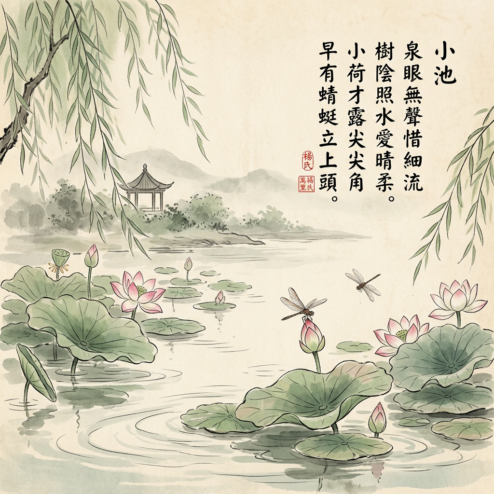

🔊 语音讲解
准备中...
🏝️📜🎶
古诗里的秘密节奏
发现《小池》和《池上》的平仄规律
🌟 一年级适用 🌟
一起来做"古诗节奏小侦探"吧！
🎯 本节课学习目标
🎯
✅ 复习四声：一声平、二声扬、三声拐弯、四声降
✅ 认识平仄：一二声=平声，三四声=仄声
✅ 发现规律：五言看第2、4字，七言看第2、4、6字
💡 完成本节课后，你就能发现古诗里的秘密节奏啦！
🔍 先来复习：四声儿歌
🎵
一声平，二声扬
三声拐弯，四声降！
四声大比拼
mā
第一声
→ 平声 ✅
má
第二声
→ 平声 ✅
mǎ
第三声
→ 仄声 ⚡
mà
第四声
→ 仄声 ⚡
💡 记住：一、二声 = 平声（平平淡淡）｜三、四声 = 仄声（仄仄起伏）
✨ 什么是"平仄"？
🎼
😌
平声
第一、二声
声音平平的、稳稳的
⚡
⚡
仄声
第三、四声
声音有起伏、有变化
平仄节奏可视化动画
🌟 秘密规律
格律诗（像《小池》《池上》）有固定的平仄变化
只需要看每句的
第2、4、6个字
五言诗看第2、4个字
七言诗看第2、4、6个字
🕵️ 接下来，我们一起来当"节奏小侦探"，发现古诗里的秘密规律！
📖 第一首：《池上》
《池上》
【唐】白居易
小娃撑小艇，偷采白莲回。
不解藏踪迹，浮萍一道开。
👆 这是一首五言绝句，每句5个字。我们只需要看第2、4个字就能发现平仄规律！
🔍 《池上》的平仄规律
🎯
《池上》—— 五言绝句
只看每句的第2、4个字
四句的规律
第1句：仄平
第2句：平仄
第3句：平仄
第4句：仄平
🌟 发现规律！
《池上》是
五言绝句
平仄规律：
仄平，平仄，平仄，仄平
看每句的第2、4个字就能发现！
📖 第二首：《小池》

《小池》
【宋】杨万里
泉眼无声惜细流，树阴照水爱晴柔。
小荷才露尖尖角，早有蜻蜓立上头。
👆 这是一首七言绝句，每句7个字。我们需要看第2、4、6个字来发现平仄规律！
🔍 《小池》的平仄规律
🎯
《小池》—— 七言绝句
只看每句的第2、4、6个字
四句的规律
第1句：平仄平
第2句：仄平仄
第3句：仄平仄
第4句：平仄平
🌟 发现规律！
《小池》是
七言绝句
平仄规律：
平仄平，仄平仄，仄平仄，平仄平
看每句的第2、4、6个字就能发现！
🎮 互动练习：小侦探挑战
🕵️
《池上》第一句的第2个字「娃」是平声还是仄声？
平声 ✅
仄声 ⚡
题目
1
/ 6
🎵 总结：平仄儿歌
📝 今天我们学会了
✅ 复习了四声：一声平、二声扬、三声拐弯、四声降
✅ 知道了平仄：一二声=平，三四声=仄
✅ 发现了《池上》（五言）的平仄规律：仄平，平仄，平仄，仄平
✅ 发现了《小池》（七言）的平仄规律：平仄平，仄平仄，仄平仄，平仄平
✅ 记住：五言看第2、4字，七言看第2、4、6字
🌟 现在你知道了古诗里的秘密节奏！快去和爸爸妈妈分享吧！
🗺️ 知识图谱
📚 前置知识（学了这个再学本课）
🔤 拼音基础
🎵 四声认识
🚀 后续知识（学完本课再学这些）
📖 古诗进阶
🎼 平仄规则深入
🏯 唐诗入门
🔗 相关知识点
🇨🇳 中华文化
🎶 诗歌节奏